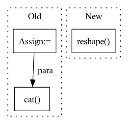

Pattern ID :2018
Before Change
content_code = self.content_embedding(content_img_id)
style_code = self.style_embedding(style_img_id)
class_code = self.class_embedding(class_id)
if self.training and self.config["content_std"] != 0:
noise = torch.zeros_like(content_code)
noise.normal_(mean=0, std=self.config["content_std"])
regularized_content_code = content_code + noise
else:
regularized_content_code = content_code
if self.training and self.config["style_std"] != 0:
noise = torch.zeros_like(style_code)
noise.normal_(mean=0, std=self.config["style_std"])
regularized_style_code = style_code + noise
else:
regularized_style_code = style_code
class_with_style_code = torch.cat( (class_code, regularized_style_code), dim=1)
class_with_style_code = self.class_style_modulation(class_with_style_code)
adain_params = self.modulation(class_with_style_code)
generated_img = self.decoder(regularized_content_code, adain_params)After Change
return {
"img": self.to_rgb(x),
"content_code": content_code.reshape( x.shape[0], -1)
}
class Discriminator(nn.Module):In pattern: SUPERPATTERN
Frequency: 3
Non-data size: 3
Instances Fragment ID: 13743106
Project Name: avivga/overlord
Commit Name: fa020664bf0dcbd11e72953117146be2cdbc3b48
Time: 2020-05-29
Author: avivga@gmail.com
File Name: model/modules.py
M Class Name: Generator
N Class Name: Generator
M Method Name: forward(3)
N Method Name: forward(4)
M Parent Class: nn.Module
N Parent Class: nn.Module
M File Name: model/modules.py
N File Name: model/modules.py
M Start Line: 34
M End Line: 67
N Start Line: 52
N End Line: 76
Before Change
batch_size, num_of_vertices, in_channels, num_of_timesteps = x.shape
data = Data(edge_index=edge_index, edge_attr=None, num_nodes=num_nodes)
lambda_max = LaplacianLambdaMax()(data).lambda_max
outputs = []
for time_step in range(num_of_timesteps):
outputs.append(torch.unsqueeze(self.cheb_conv(x=x[:,:,:,time_step], edge_index=edge_index,
batch = batch_size, lambda_max=lambda_max), -1))
spatial_gcn = F.relu(torch.cat( outputs, dim=-1) ) // (b,N,F,T)
// convolution along the time axis
time_conv_output = self.time_conv(spatial_gcn.permute(0, 2, 1, 3)) // (b,F,N,T)After Change
batch = batch_size, lambda_max=lambda_max), -1))
spatial_gcn = F.relu(torch.cat(outputs, dim=-1)) // (b,N,F,T)
"""
tmp = x.permute(2,0,1,3).reshape( num_of_vertices, in_channels, num_of_timesteps*batch_size) // (N_nodes, F_in, B*T_in)
tmp = tmp.permute(2,0,1) // (B*T_in, N_nodes, F_in)
output = F.relu(self.cheb_conv(x=tmp, edge_index=edge_index,
batch = batch_size*num_of_timesteps, lambda_max=lambda_max)) Fragment ID: 13743110
Project Name: benedekrozemberczki/pytorch_geometric_temporal
Commit Name: 509a541a01913f5b45859b801c48b5fd264bd94a
Time: 2021-03-18
Author: He_YX@outlook.com
File Name: torch_geometric_temporal/nn/convolutional/mstgcn.py
M Class Name: MSTGCN_block
N Class Name: MSTGCN_block
M Method Name: forward(4)
N Method Name: forward(4)
M Parent Class: nn.Module
N Parent Class: nn.Module
M File Name: torch_geometric_temporal/nn/convolutional/mstgcn.py
N File Name: torch_geometric_temporal/nn/convolutional/mstgcn.py
M Start Line: 36
M End Line: 41
N Start Line: 44
N End Line: 48
Before Change
// return y.reshape(y.shape[0], -1, y.shape[3], y.shape[4])
b, n, h, w = x2.data.size()
b_n = b * n // 2
y = x2.reshape(b_n, 2, h * w)
y = y.permute(1, 0, 2)
y = y.reshape(2, -1, n // 2, h, w)
return torch.cat( (y[0], y[1]), 1)
class GSConvns(GSConv):
// GSConv with a normative-shuffle https://github.com/AlanLi1997/slim-neck-by-gsconvAfter Change
x1 = self.cv1(x)
x2 = torch.cat((x1, self.cv2(x1)), 1)
// shuffle
y = x2.reshape( x2.shape[0], 2, x2.shape[1] // 2, x2.shape[2], x2.shape[3])
y = y.permute(0, 2, 1, 3, 4)
return y.reshape(y.shape[0], -1, y.shape[3], y.shape[4])
Fragment ID: 13743115
Project Name: alanli1997/slim-neck-by-gsconv
Commit Name: d777012fa58bb0945c52782dda58f48a4fc53521
Time: 2023-02-05
Author: Yanzailee@163.com
File Name: models_inPaper.py
M Class Name: GSConv
N Class Name: GSConv
M Method Name: forward(2)
N Method Name: forward(2)
M Parent Class: nn.Module
N Parent Class: nn.Module
M File Name: models_inPaper.py
N File Name: models_inPaper.py
M Start Line: 45
M End Line: 57
N Start Line: 72
N End Line: 76